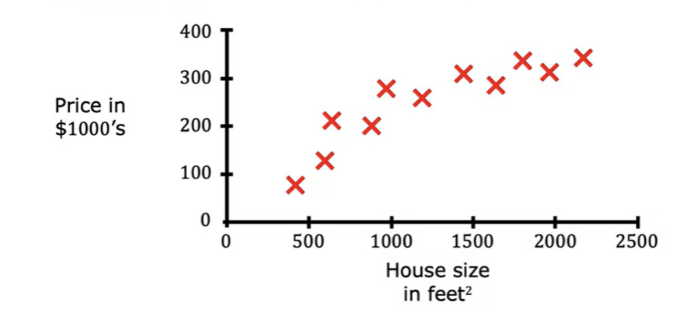

As first step, download the Anaconda package manager from https://www.anaconda.com. Then follow the installer UI
instructions. After a successful installation, open Anaconda-Navigator App.
Installing Jupyter Notebook
From the Anaconda-Navigator, click on Jupyter Notebook Lauch button. Jupyter Notebook will be installed and a
webpage will be opend. From now on , you can lauch Jupyter notebook from commandline by typing jypyter-notebook.
Machine Learning
Machine Learning Specialization from Andrew NG is a good reference to understand the basics of Machine learning.
"Machine Learning is the field of study that gives computers the ability to learn withoit being explicitly
programmed" - Arutur Samuel 1959
Machine Learning algorithms
Supervised Machine Learning
Regression
Classification
Unupervised Machine Learning
Recommender Systems
Reinforcement learning
Supervised Machine Learning- Regression
The key characteristic of a supervised learning is that you give your learning algorithm examples to learn
from.
These alorithms help to learn input X to output Y mapping
Examples
Smapl filters: X= Email ; Y = Spam (0/1)
Speech recognition: X = Audio ; Y = Transcript
Machine Translation: X = Englisg; Y = Spanish
Online advertising : X = Ad, User-information ; Y = Click (0/1)
Self driving car: X = Image, RadarInput; Y = Position of other cars
Visual Inspection: X= Image of Phone ; Y = Detect (0/1)
In all these applications, you will train your model with examples of input X and the expected answers Y
(labels)
Example of Housing price based on known data

Housing Price Data(credit Andrew NG).
Now we have to predict housing price for a new input , say 1200 which is not in the data that we have. You
need to find a mathematic function that best fit the data given.
For doing this, you need to decide a straight line, a curve or another function that is even more complex
for the data.
You also need an algorithm to choose the correct function to fit this data.
This housing price prediction is the particular type of supervised learning called regression. In regression we are trying to predict a number from infinitely many possible numbers.